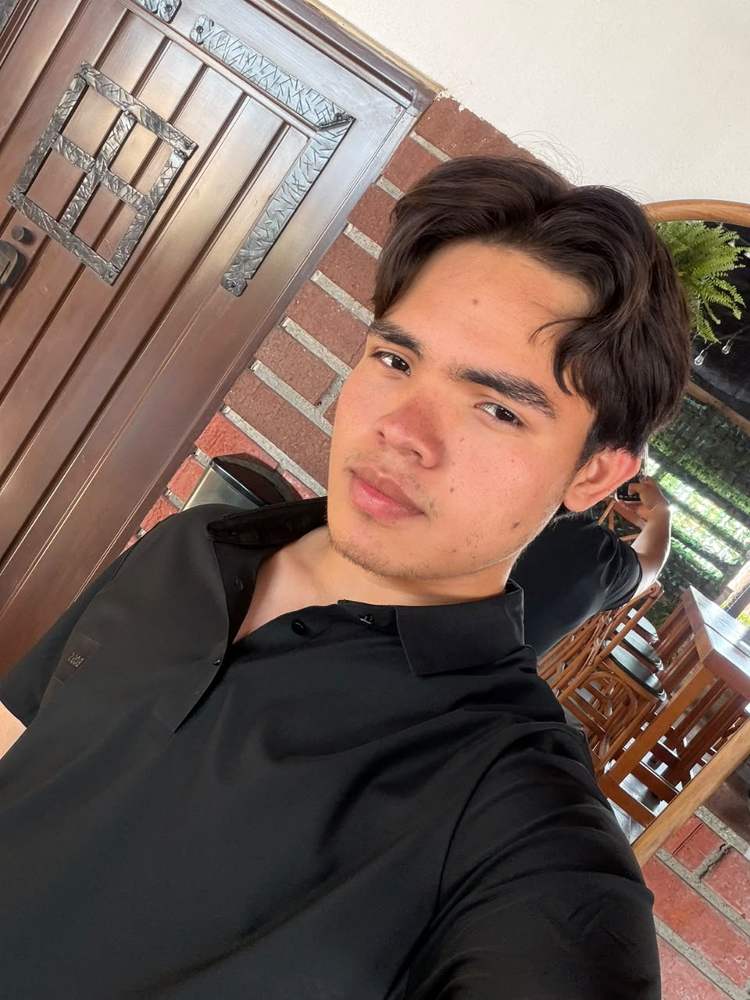

Sobre mí

Holaaaa, soy Ivan Saldaña Mendoza, actualmente tengo 19 años, estoy estudiando desarrollo de software multiplataforma en la UTL. Nací en Leon GTO, pero toda mi vida vivi en Cueramaro hasta ahora que esoy estudiando, Desde muy chico me llamo la atencion la carrera que estoy estudiando, actualmente siento que no le estoy poniendo el empeño necesario, pero estoy dispuesto a mejorar y aprender todo lo que pueda. Recuerdo que la carrera me empezo a interesar cuando yo estaba en la secundaria, casualmente me aparcio un video sobre un Ingeniero de Software recien egresado y mostraba como era trabajar como desarrollador de software para Google. Desde ese momento me emocione y decidi estudiar esto.
Mi familia esta conformada por mi Mamá, mi Papá, una hermana mayor, un hermano mayor, yo y mi hermana pequeña, Actualmente en mi casa solo voven mis papás con mi hermana pequeña, mi hermana mayor ya esta casata y tiene una muy linda hija a la cual quiero muchisimo, mi hermano mayor actualmente es soldado y pues no esta en casa, y pues yo como estudio fuera solo voy los fines de semana, pero no me quedo mucho por que llego el viernes en la tarde y el sabado temprano tengo que ir a trabajar, por lo mismo no estoy mucho en mi casa.
Mis hobbies y gustos
- Ver películas y series
- Escuchar músicaaa
- Aprender
- Hacer deporte